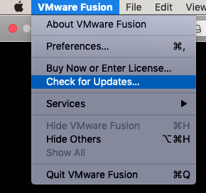

This tutorial will show how to run Windows on MacOS using VMWare fusion. This is for students in the College of Business and Economics who use MacOS, but need to run software that only runs on Windows.
1 Minimum required specifications
To run Windows in VMWare Fusion, your Mac must have the following minimum specifications. You can find your Mac’s specifications by going to → About this Mac.
- Memory: 4GB (8GB Recommended, 4GB will work, but will be slow)
- Storage: At least 40 GB free
2 Steps
The process has three major steps:
- Obtain and install VMWare Fusion
- Obtain and install Windows 10 on VMWare Fusion
- Obtain and install the required software
3 Obtain and install VMWare Fusion
3.1 Register with VMWare and Download VMWare Fusion
- Go to The VMWare Fusion Personal License Page
- Choose
Create an Account(unless you already have one) - Register by giving the required information
- Verify your email address by clicking on the appropriate link in the email sent to you
- Go back to The VMWare Fusion Personal License Page and login with your account
- You should see your License Key in the License Information. You will need this later.
- Download VMWare Fusion 12 by clicking on the
Manually Downloadbutton in the Download Packages section
3.2 Install VMWare Fusion
- Open the .dmg file you downloaded. You can find it by clicking on
show in finderon the downloaded file in the browser - Double-click on the installation
- During the installation, it will ask you for a license key. This is the serial number saved above.
- Allow notifications from VMWare Fusion when asked
- When asked to enable access to Accessibility features, Click
OK. When presented with the Accessibility settings, click on the lock to unlock, if needed, and checkVMWare Fusionto allow them. - When asked whether to allow VMWare Fusion to control “System Events.app”, allow it.
- During the installation, you may get a prompt to allow VMWare Fusion to load a system extension. You may have allow this in
System Preferences→Security and Privacy. On the General tab, it should say, “System software from developer ‘VMware, Inc.’ was blocked from loading. Click on theAllowbutton. - If prompted, install any updates to VMWare Fusion.
- If not prompted, once you are finished with the install, open VMWare Fusion and have it check for and install updates: 
- Once finished, when you open a VMWare Fusion, it will present you with a window asking you to “Select the installation method.” Leave that open and go to the next step where you will obtain and install Windows 10.
4 Obtain and install Windows 10 on VMWare Fusion
4.1 Sign up for Azure Dev Tools for Teaching
- First you need to get a Product Key for Windows 10 by signing into Azure Dev Tools for Teaching.
- Go to aka.ms/devtoolsforteaching
- Sign in using your Boise State “Work or School” email.
- At this point you should be logged in and see something that says, “Welcome to the Azure Education Hub.” If there’s an error, follow the instructions in the next section. If not, skip the next section.
4.1.1 Inability to login to Azure Dev Tools for Teaching (only if there’s an error)
Some of you may get an error when attempting to login to Azure Dev Tools for Teaching. If this is the case, follow these insructions.
- The most common error when login into Azure Dev Tools for Teaching is an Incorrect account type. To fix this error, you will login with a personal Microsoft Account.
- Click on “Sign in with a separate Microsoft Account”, or, if that’s not available, start over by going to aka.ms/devtoolsforteaching and clicking on
Sign inagain. - This time, choose
Use another accountwhen prompted to pick an account - Use your personal Microsoft account. You may have one for using Outlook.com email or for playing XBox online. You may have to create one, if you don’t have one already.
- When prompted, enter your
boisestate.eduemail address to verify that you are a student at Boise State. - Go to your email and click on the link in the verification email.
- You should now be logged in.
If you are still having trouble logging in, create a screenshot of your error and send it and the following to helpdesk@boisestate.edu:
I am attempting to login in to Azure Dev Tools for Teaching at aka.ms/devtoolsforteaching. When I login I get the error in the attached screenshot, which says: “[THE TEXT OF THE ERROR].” I have attempted to login using my boisestate.edu account and my personal Microsoft Account, but neither work.
Additionally, send the same thing to Microsoft Support.
4.2 Download Windows 10
- After logging into Azure Dev Tools for Teaching, you should see a page that says “Welcome to the Education Hub.” Click on
Download Software. - Search for “Windows 10” and choose “Windows 10 Education, version 21H1 – DVD”
- Click on “View Key” and copy the Product Key. Copy it and save it somewhere for later.
- Click on the Download button to download Windows 10 as a DVD image.
4.3 Install Windows 10 in VMWare Fusion
- Open Finder and go to your Downloads folder (or choose
Open in Finderfrom the context menu on the file you downloaded). - If VMWare Fusion isn’t already open, open it.
- You should see a window that says “Select the Installation Method.” If not, with VMWare Fusion as the program in the foreground, go to the
Filemenu on the menu bar and choose `New…” - Drag the file from Step 1 (its name will start with
en_windows_10) to the area that says “Install from disc or image.” - Choose
Continue. - Leave “Use Easy Install” checked and choose an Account Name and Password for the administrator account for your new Windows 10 install.
- Copy the Product Key you saved earlier into the “Windows Product Key” box
- Choose “Windows 10 Education” as your Windows Version.
Continue - Choose the “More Seamless” option to allow for copying/pasting between MacOS and Windows 10.
Continue - If you only have 4 GB of RAM, choose
Continue. If you have more, chooseCustomize Settings- If you have more than 4 GB of RAM do the following. If not skip to the next step.
- In the Settings, choose
Processor & Memory. - Move the memory slider from 2048 to 4096 (or 8192 if you have 16 GB of RAM)
- Close the settings.
- Click on the large
►in the black area of the virtual machine window just created. - Windows will now install.
- When you login the first time, it will prompt you to logout and login again so that it can properly install VMWare Tools. Logout and login again.
- Windows 10 is not ready to install whatever software you require.
5 Obtain and install the required software
At this point, you have a running Windows 10 virtual machine. Using the virtual machine is almost exactly like using any other Windows 10 machine. You should install the software specific to your class the same way as instructed for other Windows users. The remaining sections are available if you need help installing the associated software for your classes.
5.1 Obtain and install Microsoft Office including Microsoft Access
- Inside your Windows 10 virtual machine in VMWare Fusion use Internet Explorer to go to https://www.boisestate.edu/oit-software/microsoft-office/student-advantage-microsoft-office-365-proplus/
- Scroll down and find and press the
Download Softwarebutton - Sign in using your boisestate.edu username and password
- Click on
Install Officein the upper-right corner of the Office 365 screen - Choose to run the file it downloads
- Choose
Yeswhen it asks whether you want to allow it to make changes - After the installation is finished, the first time you open an office app, it will ask you to login. Login using your boisestate.edu credentials
5.2 Obtain and install Microsoft Project
- Go to aka.ms/devtoolsforteaching and click on
Sign in. - Go to
Softwarein the left-hand navigation - Search for “Project” in the search bar
- Choose “Project Professional 2019 (Windows only)”
- Click on
View Keyto get your license key. Copy this key into notepad or some other place - Click on
Download - Once it is downloaded, copy it from the Downloads folder to the Documents folder
- Right-click on the file and choose
Mount - Double-click on
Setup - After it is finished, open Project and enter the license key when prompted
5.3 Obtain and install Visual Studio Community
- Go to https://visualstudio.microsoft.com/vs/community/
- Click on the
Download Visual Studiobutton - Choose
Runwhen asked what you want to do with the file - Choose
Yeswhen asked if you want to allow it to make changes - Click the
Continuebutton when prompted - Choose
.NET desktop developmentfrom the Workloads - Click the
Installbutton in the lower-right corner - After it is done installing, it will launch and ask you to sign in. Sign in using your boisestate.edu credentials
5.4 Obtain and install Microsoft Visio
- Go to aka.ms/devtoolsforteaching and click on
Sign in. - Go to
Softwarein the left-hand navigation - Search for “Visio” in the search bar
- Choose “Visio Professional 2019 (Windows only)”
- Click on
View Keyto get your license key. Copy this key into notepad or some other place - Click on
Download - Once it is downloaded, copy it from the Downloads folder to the Documents folder
- Right-click on the file and choose
Mount - Double-click on
Setup - After it is finished, open Project and enter the license key when prompted